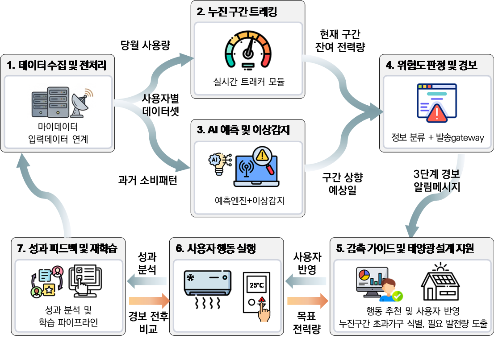
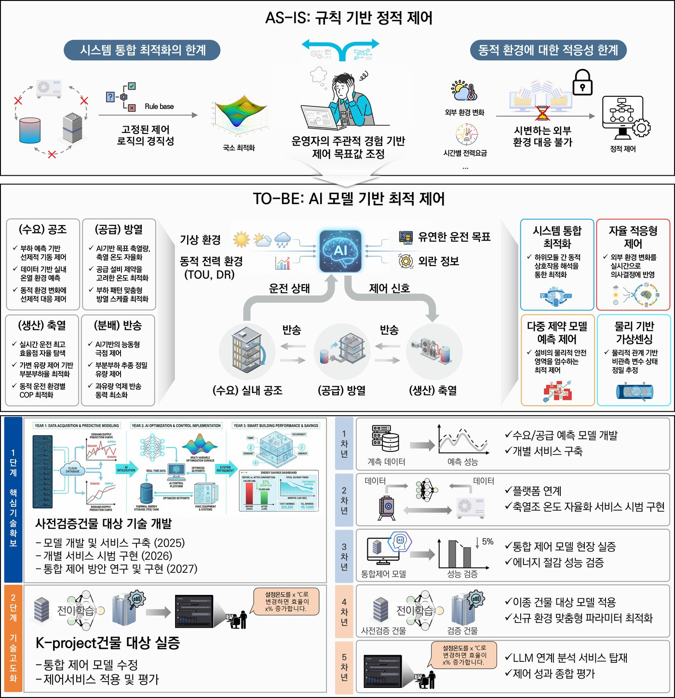
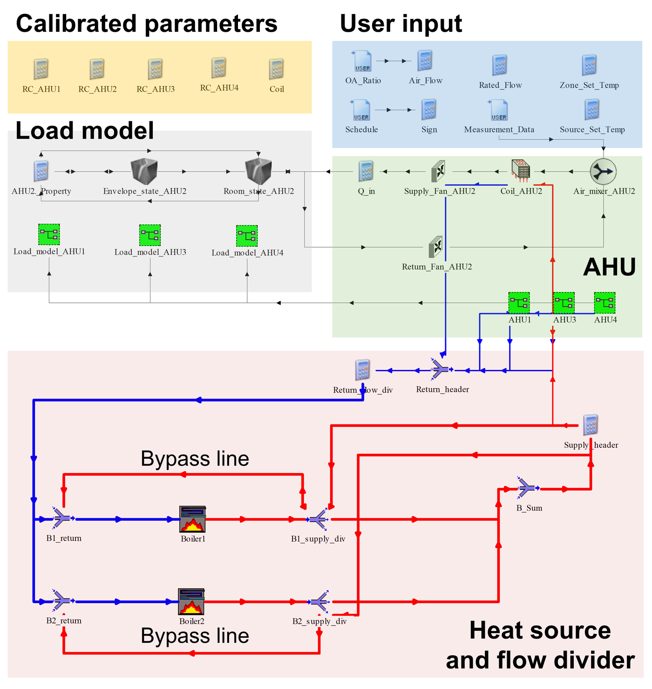
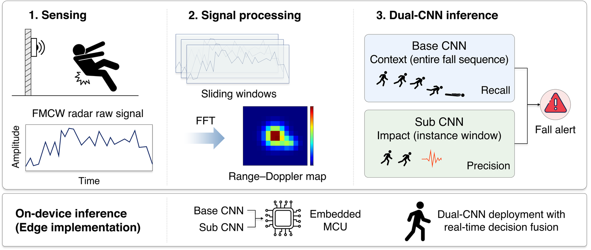
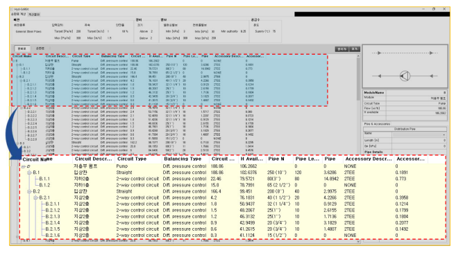

Projects
Connecting field data to modeling, diagnosis, and control
01 · Key Projects
Key Projects
MyData-Based Intelligent Progressive-Tariff Prediction and Early Warning Service (ongoing)
We develop the analysis engine for a service that predicts and warns households before their electricity use moves into a higher progressive-tariff tier. Billing and meter-reading histories are combined with the tariff formula to forecast consumption for each household.
- Household electricity consumption forecasting and tier-escalation detection
- Prediction engine combining the tariff formula with actual usage history
- Design of the analysis module for the early warning service

Large-Scale Centralized Hydrothermal Energy Demonstration Plant Responding to Source-Temperature Variation
We conducted modeling and optimal control research on a large-scale heat pump system that responds to changes in the hydrothermal source temperature. Operating strategies for the demonstration plant were derived by linking heat pumps, thermal storage, and building loads, improving its operation.
- Physics-based modeling of the hydrothermal heat pump system
- Review of operating strategies and control algorithms coupled with thermal storage
- Integration of system models for application to the demonstration plant

Intelligent Building Energy and Environment Management System (iBEEMS) Based on Autonomous Operation
A digital twin of a 15-story office building was built by linking BAS operational data and equipment specifications to physics-based models. Reinforcement learning control trained in this environment reduced gas consumption by about 23% compared with the existing rule-based control.
- Integrated TRNSYS model combining partial calibration with rated performance
- Digital twin based on a SINN hybrid model and surrogate models
- Training and evaluation of PPO-based multi-agent boiler operating strategies

TRNSYS Model Development and Learning-Based System Modeling for Equipment Condition Diagnosis
A model with optimized equipment parameters was built by combining operational data with the TRNSYS platform. Using this model, we developed algorithms for fault detection and diagnosis (FDD) of HVAC systems.

Survey of Zero-Energy Buildings and Support for Improving Monitoring Operations
Using BEMS operational data, we diagnosed the equipment condition and energy-use characteristics of zero-energy buildings and reviewed improvements to their monitoring systems and operating practices.
Occupant Fall Detection Using Edge-Device Radar Sensors
We developed a lightweight machine learning (TinyML) model that detects occupant falls from radar sensor data. The compact AI model was embedded on the edge device, where it runs inference directly.

Digital Twin Energy Simulator
A digital twin simulator module for chillers. By comparing design performance with operational data, the tool monitors the operating state and changes in performance, tracking equipment degradation over time.

Integration and Demonstration of Zero-Energy Building Technology Packages — ZEB Performance Evaluation Platform
We developed a service platform that evaluates the performance of zero-energy buildings based on DIN V 18599, and reviewed the application of passive and active technologies for achieving zero-energy buildings.

Hydronic System Calculation Program for Selecting Heating and Cooling Pipes, Circulation Pumps, and Flow Control Valves
We developed a calculation program that supports the selection of pipes, pumps, and valves for heating and cooling hydronic systems, and analyzed how changes in pipe diameter affect fluid velocity and valve authority.

Energy-Saving Retrofit Solutions for Large Commercial Sites
To improve the energy performance of large commercial sites, we developed algorithms and a program that diagnose energy conservation measures and estimate their expected savings.
02 · Results
Research Outcomes
Fixed vs. Adaptive Fault Detection
Rule-based vs. Reinforcement Learning
Fall Detection Without a Camera
03 · Project History
Project History
19 national R&D and industry collaboration projects since 2011
| Period | Project | Funder |
|---|---|---|
| 2026.10 – present | MyData-Based Intelligent Progressive-Tariff Prediction and Early Warning Service (ongoing) | Korea Internet & Security Agency (KISA) |
| 2025.04 – 2026.08 | Large-Scale Centralized Hydrothermal Energy Demonstration Plant Responding to Source-Temperature Variation | Ministry of Climate, Energy and Environment |
| 2025.05 – 2025.11 | Survey of Zero-Energy Buildings and Support for Improving Monitoring Operations | Korea Energy Agency |
| 2024.11 – 2025.12 | Occupant Fall Detection Using Edge-Device Radar Sensors | Infineon |
| 2023.06 – 2024.01 | Digital Twin Energy Simulator | Samsung |
| 2021.09 – 2022.07 | TRNSYS Model Development and Learning-Based System Modeling for Equipment Condition Diagnosis | Korea Institute of Building Energy Technology (KBeT) |
| 2021.05 – 2026.04 | Intelligent Building Energy and Environment Management System (iBEEMS) Based on Autonomous Operation | KETEP |
| 2020.05 – 2024.12 | Development and Demonstration of an Energy-Saving Smart Lighting Platform | KETEP |
| 2020.04 – 2021.12 | Benchmarking System Based on AI Analysis of Residential Power Quality Data | Korea Agency for Infrastructure Technology Advancement (KAIA) |
| 2019.04 – 2022.12 | Remodeling Technologies for Improving the Quality and Performance of Aged Small Buildings | KAIA |
| 2018.10 – 2021.09 | Intelligent HVAC Control System with IoT Device Interoperation for Building Energy Efficiency | KETEP |
| 2017.12 – 2021.05 | Development and Demonstration of ESS-Based Integrated Products for Energy Management in Distribution and Logistics Facilities | KETEP |
| 2017.12 – 2020.11 | Energy-Saving Retrofit Solutions for Large Commercial Sites | KETEP |
| 2016.12 – 2018.09 | Hydronic System Calculation Program for Selecting Heating and Cooling Pipes, Circulation Pumps, and Flow Control Valves | KETEP |
| 2016.11 – 2019.09 | Integration and Demonstration of Zero-Energy Building Technology Packages (Passive & Active) | KETEP |
| 2016.08 – 2017.12 | Development of a Cleaning Device for Building Heating Pipes | KETEP |
| 2016.04 – 2018.12 | Demonstration Study on Space-Level Energy and Environmental Performance Testing of Next-Generation Building Materials | LG Hausys |
| 2015.06 – 2018.05 | Integrated Energy Diagnosis for Small and Medium-Sized Buildings Using Building Energy Simulation and Smart Metering | KETEP |
| 2011.09 – 2014.12 | Standardization of Building Energy Performance Evaluation Models and Performance Improvement Processes | Ministry of Land, Infrastructure and Transport (Dankook University) |